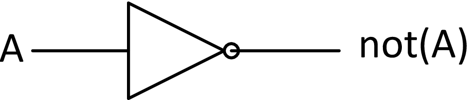
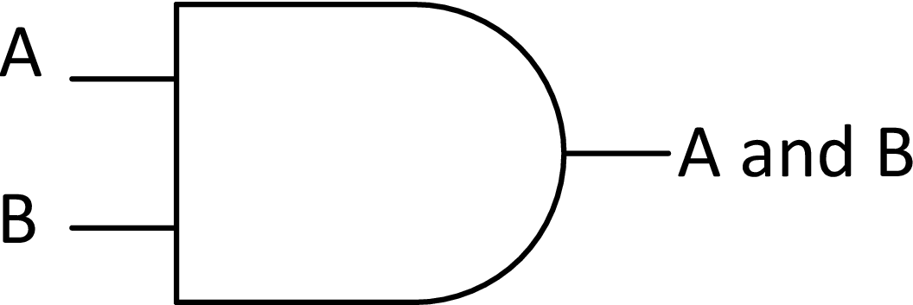
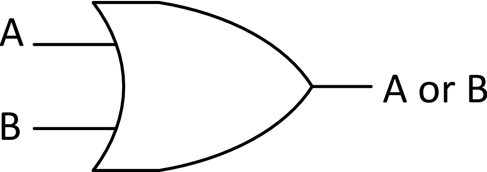
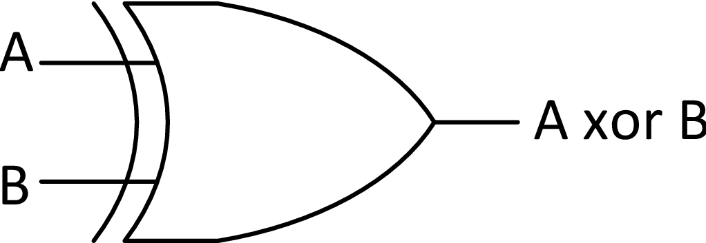

IIC2343 Arquitectura de Computadores
Operaciones Aritméticas y Lógicas
©Alejandro Echeverría, Hans-Albert Löbel
Para poder desarrollar un computador, el primer paso es implementar un mecanismo que automáticamente sea capaz de realizar operaciones básicas, como suma y resta. Dado que hay varias operaciones y además varios tipos de representaciones de datos (complemento a dos, punto flotante, etc.) necesitamos múltiples «máquinas» capaces de realizar estos cálculos e idealmente alguna técnica que nos permita diseñar estas máquinas de manera que sean matemáticamente correctas y que utilicen componentes físicamente construibles.
Para poder realizar cálculos sobre números binarios, debemos primero definir una representación física para estos. Dado que los números binarios trabajan con sólo dos símbolos (0 y 1) es sencillo definir representaciones físicas del tipo «tener X cantidad de algo = 1» y «no tener nada = 0» . Por ejemplo, se podría pensar en ocupar una representación basada en líquidos: tener flujo del líquido se podría interpretar como un 1; no tener nada, como un 0.
Además de la representación se requiere un mecanismo de control que permita definir el valor de un bit. En el caso del líquido, por ejemplo, podría tenerse una válvula de control, que si está cerrada deja pasar el líquido, representando un 1 binario, y si está abierta no deja pasar líquido, representando un 0 binario. El problema de esto es que ahora además del líquido necesitamos un mecanismo de control, que podría implementarse a su vez con líquido, pero resulta complejo. Una mejor alternativa corresponde a usar flujo eléctrico en vez de ocupar flujo de un líquido. En esta representación, la presencia de una corriente eléctrica simboliza un 1; la ausencia de corriente un 0. La principal ventaja de esta representación es que la apertura de la válvula puede ser controlada a su vez por electricidad, y de esta forma simplificamos el funcionamiento del sistema.
Un componente eléctrico que cumple con las funciones que necesitamos para representar 1s y 0s son los relés. Los relés están formados por un cable de entrada, dos de salida y un cable de control. Si el cable de control no tiene corriente, la entrada está conectada a la 2da salida (este es el estado por defecto). Si se pasa corriente por el cable de control, la entrada estará conectada a la 1era salida. De esta forma, no tener corriente en el cable de control, implica que no habrá corriente en la 1era salida (lo que podemos interpretar como un 0) y si tener corriente, implica que si habrá corriente en la 1era salida (lo que podemos interpretar como un 1).
Saber la representación física de los números binarios, sin embargo, no nos ayuda a solucionar el problema de como realizar cálculos con ellos. Lo que sabemos es que debemos diseñar sistemas que sean capaces de funcionar con corriente eléctrica, pero necesitamos otras herramientas conceptuales para poder determinar que hacer con dicha corriente.
George Boole, un matemático inglés del siglo XIX, desarrolló un sistema formal para analizar la lógica. Este sistema lógico, denominado Lógica Booleana en su honor, fue creado sin ninguna relación directa con la problemática de automatizar el cálculo numérico, pero resultaría de suma relevancia en el siglo XX cuando se empezaron a construir los primeros computadores.
A continuación revisaremos los principales aspectos de la lógica de Boole, para luego hacer el vínculo con nuestro problema de cálculo numérico.
La lógica booleana se basa en el concepto de proposiciones lógicas. Una proposición lógica es una oración o sentencia que puede ser verdadera o falsa. Por ejemplo, la sentencia: «está lloviendo.» será verdad si se dice un día que efectivamente está lloviendo, y será falsa si se dice en un día que no está lloviendo. La sentencia «hoy es viernes.» será verdadera todos los días viernes, y falsa todo el resto de los días.
Las proposiciones lógicas en el sistema definido por Boole, pueden tomar solamente uno de dos valores: verdadero (V) o falso (F). En este sistema no existe espacio para la ambigüedad («Puede estar lloviendo.» ni para las probabilidades «Lloverá con un 60% de probabilidad.» , sólo se consideran válidas sentencias que tienen una respuesta de verdad exacta.
La lógica booleana permite también conectar una secuencia de proposiciones ocupando una serie de condiciones lógicas básicas:
Cada una de estas condiciones lógicas define lo que se denomina una «tabla de verdad»
, es decir una tabla que asocia cuando será verdadera (V) o falsa (F) una proposición creada a partir de una o más
proposiciones combinadas con estas condiciones, detallando para todas las posibles combinaciones de verdad o
falsedad de éstas, cuál será el resultado.
La tabla de verdad de la condición lógica not al combinarla con una proposición A es:
| A | not(A) |
| F | V |
| V | F |
La tabla de verdad de la combinación de dos proposiciones lógicas A y B con la condición lógica and es:
| A | B | A and B |
| F | F | F |
| F | V | F |
| V | F | F |
| V | V | V |
La tabla de verdad de la condición lógica or es:
| A | B | A or B |
| F | F | F |
| F | V | V |
| V | F | V |
| V | V | V |
Boole desarrolló un sistema algebraico a partir de su lógica, en la cual las condiciones lógicas representaban las operaciones posibles y las proposiciones, las variables. Con este sistema, se podían construir sentencias lógicas complejas que se ajustan a una determinada tabla de verdad, construyendo nuevas condiciones lógicas basadas en las tres básicas.
Por ejemplo, podríamos querer definir una condición lógica similar al or pero que sea verdadera sólo si una de las dos proposiciones es verdad y no si ambas lo son (lo que se conoce como un o exclusivo, en inglés como exclusive or o xor). La tabla de verdad de la condición lógica xor es:
| A | B | A xor B |
| F | F | F |
| F | V | V |
| V | F | V |
| V | V | F |
A través del álgebra diseñada por Boole, podemos construir una expresión ocupando and, or y not que represente esta tabla de verdad:
A xor B = not(A) and B or A and not (B)
En 1937, Claude Shannon, ingeniero del MIT, se dio cuenta de que el álgebra booleana podía ser utilizada para trabajar con números binarios: bastaba reemplazar todos los valores «Verdadero» por 1s y los «Falso» por 0s, y todas las técnicas y procedimientos del álgebra descrita por Boole podían ser usados también para hacer álgebra con números binarios. El gran aporte de esta idea fue que entregó una herramienta poderosa para diseñar componentes que permitieran realizar cálculos con números binarios.
Shannon definió el concepto de «compuertas binarias» las cuales corresponden a componentes que implementan una de las condiciones lógicas definidas por Boole. Cada compuerta se comporta según las tablas de verdad de Boole, pero en vez de asociar valores de verdad, asocia valores binarios. Las compuertas, de esta manera, representan «cajas negras» que reciben como input valores binarios y entregan un determinado output. A cada compuerta se le asignó un símbolo, de manera de permitir diseñar gráficamente combinaciones de estas.
A continuación se muestran las tablas de valores y los símbolos de las compuertas básicas:

| A | not(A) |
| 0 | 1 |
| 1 | 0 |

| A | B | A and B |
| 0 | 0 | 0 |
| 0 | 1 | 0 |
| 1 | 0 | 0 |
| 1 | 1 | 1 |

| A | B | A or B |
| 0 | 0 | 0 |
| 0 | 1 | 1 |
| 1 | 0 | 1 |
| 1 | 1 | 1 |

| A | B | A xor B |
| 0 | 0 | 0 |
| 0 | 1 | 1 |
| 1 | 0 | 1 |
| 1 | 1 | 0 |
El gran salto conceptual de Shannon de la lógica booleana a las compuertas binarias no tendría mayor utilidad si no hubiese también definido como implementar de manera física dichas compuertas. Shannon observó que una compuerta and se podía representar como un conjunto de dos relés ubicados en serie, dado que estos cumplen con la tabla de valores de la compuerta: habrá corriente en la salida, sólo si ambos relés dejan pasar corriente.
De manera similar, una compuerta or se podía representar como un circuito en paralelo, es decir, como dos relés que funcionan independientes y que se conectan sus salidas, cumpliendo con que la corriente pasa al final, si pasa por cualquiera.
Por último la compuerta not también podía implementarse con relés, básicamente considerando la 2da salida como la negación de la 1era.
La implementación física de estas tres compuertas nos permite construir sistemas más complejos, dado que al estar ocupando el álgebra de Boole, sabemos que podemos construir el resto de las combinaciones lógicas en base a estas tres compuertas.
El diseño a través de compuertas binarias sumado a su implementación física, nos entrega todo lo necesario para comenzar a construir circuitos de cálculo numérico. Vamos a comenzar con la operación más sencilla: suma de 1 bit.
Para ocupar las técnicas del diseño lógico, tenemos que pensar nuestras operaciones como tablas de verdad. La suma de 1 bit puede interpretarse como la siguiente tabla:
| A | B | C | S |
| 0 | 0 | 0 | 0 |
| 0 | 1 | 0 | 1 |
| 1 | 0 | 0 | 1 |
| 1 | 1 | 1 | 0 |
Observamos que la suma de 1 bit resulta en un número de 2 bits, y por tanto debemos diseñar dos circuitos binarios. Los bits de salida de la suma se denominan habitualmente como S o bit de suma y C o bit de carry. Si observamos cada salida de manera independiente, se observa que el bit de carry tiene la misma tabla de verdad que la compuerta and y el bit de suma, la misma tabla que la compuerta xor. De esta forma el circuito de un sumador de 1 bit queda de la siguiente manera:
Nos gustaría ahora escalar nuestro circuito para poder realizar operaciones con más bits. Para eso, sin embargo, no nos basta con el circuito sumador antes visto, lo que podemos entender viendo el siguiente ejemplo de suma:
| 1 | 1 | |||
| 1 | 0 | 0 | 1 | |
| + | 0 | 0 | 1 | 1 |
| 1 | 1 | 0 | 0 | |
El problema está en que para la suma del segundo bit, necesitamos sumar también el acarreo, o sea se requieren sumar tres valores, y nuestro circuito previo sólo es capaz de sumar dos valores (por eso habitualmente se le denomina half-adder). Podemos utilizar el circuito anterior para construir nuestro sumador de 3 entradas (conocido como full-adder):
El circuito completo del sumador de 4 bits consiste en simplemente unir 4 full-adders, conectando la salida de acarreo de cada uno, con la entrada de acarreo del siguiente, resultando en el siguiente circuito:
El siguiente nivel de dificultad en operaciones está en la resta, para la cual debemos primero convertir el restando a complemento a dos, y luego hacer la suma normal. Con el circuito anterior ya tenemos lista esta última etapa, nos falta la conversión a complemento a 2.
El algoritmo de conversión a complemento a 2 tenía dos pasos:
Para invertir los bits, podemos ocupar la compuerta not que justamente realiza esto. Para la suma de 1, podríamos ocupar otro sumador más, pero una mejor solución es usar el mismo sumador que ya tenemos, e insertar el 1 como carry in para el primer bit. Con esto nos resulta el siguiente circuito:
Podemos observar que ocupando las técnicas de la lógica booleana aplicadas a números binarios representados por circuitos eléctricos somos capaces de construir máquinas que realicen operaciones numéricas. Esta combinación de lógica con circuitos es el fundamento básico del diseño de los principales componentes de los computadores modernos. La única diferencia respecto a lo estudiado ahora, es que en vez de ocupar relés se utilizan transistores, que son componentes eléctricos conceptualmente equivalentes, pero de mucho menor tamaño y mayor velocidad.
Los circuitos del sumador y restador de 4 bits vistos previamente representan dos ejemplos de máquinas de cálculo que pueden diseñarse para realizar operaciones dentro de un computador. Para permitir combinar estas distintas máquinas se requieren mecanismos especiales de control, y también abstracciones que permitan diseñar de manera más sencilla estas combinaciones.
Como se vio anteriormente, la base del diseño de componentes basados en compuertas binarias está en la modularización y abstracción. Para el sumador de 4 bits, por ejemplo, primero diseñamos el circuito del Half-Adder a nivel de compuertas, luego el Full-Adder como una combinación de Half-Adders y finalmente el sumador de 4 bits como un conjunto de Full-Adders. De esta manera pudimos ir aumentando el nivel de abstracción, lo que nos permite trabajar con módulos de más alto nivel que las compuertas básicas (por ejemplo el sumador de 4 bits) bastándonos saber que entradas y salidas tiene y que operación está realizando.
Otro elemento que permite abstraer el diseño de estos componentes es el concepto de bus. Un bus se puede definir como un conjunto de cables o líneas de corriente que agrupados representan un valor o unidad. Por ejemplo en el caso de los circuitos de sumador y restador antes vistos, podemos agrupar los 4 bits del operando A, los 4 bits del operando B y los bits del resultado S en tres buses de 4 bits.
El concepto de buses nos entrega una notación que simplifica el diseño de estos circuitos, y nos permite trabajar con un nivel de abstracción mayor, conceptualizando las operaciones directamente sobre los operandos completos (como A y B en los casos anteriores) en vez de operaciones unitarias sobre bits. Hay que señalar, sin embargo, que también podemos hablar de buses de 1 bit, en los casos que corresponda, de manera de generalizar toda señal que interactúe con circuitos como buses.
Un aspecto interesante de la notación de buses es que nos permite escalar los circuitos a operaciones de mayor precisión, por ejemplo 8 o 32 bits, sin tener que realizar modificaciones mayores en el componente dibujado. Es evidente que por debajo de la abstracción si será necesario realizar modificaciones para que dicho circuito funcione: en el caso del sumador de 8 bits necesitamos 8 Full-Adders conectados.
Una vez definidas las abstracciones de los componentes con las que trabajaremos, debemos agregar mecanismos que permitan controlar y combinar estos distintos componentes de cálculo para construir una unidad funcional de cálculo para el computador.
Una primera funcionalidad que nos interesa agregar a nuestras máquinas de cálculo es la capacidad de controlar su salida. Los circuitos que hemos diseñado hasta ahora están siempre entregando en su salida el resultado, es decir el flujo de datos no está siendo controlado. En algunas circunstancias podría ser relevante tener el control para habilitar o deshabilitar que la salida del componente sea el resultado.
En particular nos interesaría que dado un bit de datos A0 podamos a través de otro valor E controlar si la salida A0′ tendrá el valor de A0, es decir, «se deja pasar el flujo» , o tendrá un valor 0, es decir, «se corta el flujo» , lo que podemos representar con la siguiente tabla:
| E | A0’ |
| 0 | 0 |
| 1 | A0 |
Una compuerta que cumple exactamente con lo anterior es la compuerta and la cual en caso de tener una de sus entradas en 0 tendrá siempre salida 0 y en caso de tener una de sus entradas en 1 tendrá como salida el valor de la segunda entrada. Si consideramos como una de las entradas de la compuerta a E y a la otra como A0 tenemos un circuito que cumple exactamente con la tabla anterior, el cual se denomina Enabler o Habilitador ya que permite o habilitar o deshabilitar el flujo de datos.
Podemos extender este circuito a datos con mayor número de bits. Lo interesante está en que mantenemos una sola señal E para controlar la habilitación y deshabilitación.
El circuito del enabler nos permite regular el flujo de datos de una máquina de cálculo. Sin embargo no nos ayuda en el objetivo de tener múltiples operaciones simultáneamente. Necesitamos otro circuito que nos permita controlar que operación vamos a realizar, de manera que dada una salida común podamos obtener mediante esta tanto la suma o resta de dos operandos, dependiendo de un valor de control.
Veamos el problema primero a nivel de bits: supongamos que tenemos dos datos A0 y B0 y una salida común M0. Nos gustaría poder controlar que dato sale dependiendo de una señal de selección S que cuando sea 0 entregue el valor de A0 y cuando sea 1 entregue el valor de B0, lo que se representa en la siguiente tabla:
| S | M0 |
| 0 | A0 |
| 1 | B0 |
Para construir el circuito podemos utilizar el circuito del enabler (es decir la compuerta and) de la siguiente forma: podemos ocupar la señal S como señal de habilitación/deshabilitación de manera que cuando sea 1 habilite una de las dos salidas, por ejemplo B0 y simultáneamente deshabilite A0. De manera equivalente con un valor 0 habilitará A0 y deshabilitará B0. Con esto nos aseguramos que dado un valor de S estamos obteniendo en las dos salidas siempre un valor y un 0. Si combinamos estas dos salidas mediante una compuerta or obtendremos como única salida el valor que hayamos seleccionado, circuito que se denomina Multiplexor o Mux.
Al igual que en el enabler podemos escalar en el número de datos, usando varios multiplexores de 1 bit para obtener, por ejemplo, un multiplexor que elige entre dos valores de 4 bits.
Podemos extender aún más la noción de multiplexor, pensando por ejemplo en un caso de que existan 4 entradas distintas que queramos seleccionar. La opción más simple sería escalonar 4 multiplexores, de manera que con 4 bits de control podamos controlar las 4 entradas. Podemos, sin embargo, optimizar este circuito de manera de ocupar sólo 2 bits de control: dado que 2 bits son capaces de representar 4 números (0 = 00, 1 = 01, 2 = 10, 3 = 11), podemos diseñar un circuito que dependiendo de la combinación de los dos bits de control entregue una de las cuatro entradas, como se observa en la siguiente tabla:
| S1 | S1 | M |
| 0 | 0 | A |
| 0 | 1 | B |
| 1 | 0 | C |
| 1 | 1 | D |
La implementación específica de este circuito no es relevante. Sólo nos interesa que existe como componente, y podemos trabajar con este abstrayéndonos de los detalles de su implementación:
Hay un elemento importante que surge como consecuencia del diseño de estos componentes. En los circuitos previamente estudiados (sumador y restador) los buses contenían los operandos y resultados, es decir eran buses de datos. En el caso del circuito enabler y multiplexor, en cambio, existen dos tipos de buses. Por una parte están los buses de datos, que transportan la información que será habilitada/deshabilitada o seleccionada, según el circuito que se utilice. Sin embargo, además se cuentan con las señales de control o buses de control, como el bit E en el enabler o los bits de selección en el mux. La importancia de esta diferencia es que para ambos buses estamos ocupando la misma representación numérica (números binarios) y física, por lo que, como veremos más adelante, podemos combinar la información de los distintos buses si lo necesitamos.
Ahora que conocemos los circuitos de control, podemos combinar las distintas máquinas de cálculo para armar una unidad de cálculo o unidad de ejecución. Nos enfocaremos en diseñar la unidad más básica de un computador, denominada unidad aritmética y lógica o ALU por sus siglas en inglés. Como su nombre lo señala, esta unidad permite realizar operaciones aritméticas básicas (suma y resta) y también operaciones lógicas simples (and, or, not, etc.). Algunos computadores tienen otras unidades de ejecución además de la ALU, por ejemplo una unidad aritmética para números de punto flotante o FPU, pero por ahora nos enfocaremos sólo en la ALU.
El primer paso para completar la ALU es armar la unidad aritmética, que consta de un sumador y un restador. Ocupando el multiplexor de 4 bits de datos definido previamente podemos diseñar un sumador/restador de una salida M, y con una señal de control S que cumpla con:
| S | M |
| 0 | Suma |
| 1 | Resta |
Combinando los circuitos de sumador y restador con el multiplexor obtenemos un circuito sumador/restador:
Este circuito cumple con permitir sumar y restar dos valores, entregando el resultado por la misma salida. Existe, sin embargo, una optimización que podemos hacer y tiene relación con el hecho de que el restador ocupa internamente un sumador, por lo que este circuito sumador/restador necesita de dos circuitos sumadores. Una forma en que se optimiza este circuito, es reutilizando un único sumador para ambas operaciones y agregando multiplexores a las entradas para seleccionar si entra directamente el segundo operando o su negación (para el caso de la resta). Este circuito es un ejemplo de lo que mencionamos previamente respecto a los buses de datos y control: en este caso el bus de control de selección se utiliza como dato: se agrega como carry in al sumador, de manera que cuando tiene el valor 1, lo que representa una resta, se le suma 1 para completar la conversión a complemento a 2 del segundo valor.
La ALU además de permitir operaciones aritméticas, permite operaciones lógicas entre dos valores como and, or y xor y operaciones lógicas sobre un valor como not.
Las operaciones lógicas entre números de varios bits se interpretan como operaciones bit a bit. Por ejemplo un and entre los valores 1001 y 0011 sería:
| 1 | 0 | 0 | 1 | |
| and | 0 | 0 | 1 | 1 |
| 0 | 0 | 0 | 1 | |
Un or entre los valores 1001 y 0011 sería:
| 1 | 0 | 0 | 1 | |
| or | 0 | 0 | 1 | 1 |
| 1 | 0 | 1 | 1 | |
Un xor entre los valores 1001 y 0011 sería:
| 1 | 0 | 0 | 1 | |
| xor | 0 | 0 | 1 | 1 |
| 1 | 0 | 1 | 0 | |
Por último un not del valor 0011 sería:
| not | 0 | 0 | 1 | 1 |
| 1 | 1 | 0 | 0 | |
Podemos ocupar la notación de buses para representar estas operaciones con los símbolos de las compuertas:
Otra operación relevante que es posible implementar con compuertas lógicas es la operación de desplazamiento o shifting. Esta operación permite, dado un cierto número binario, «desplazarlo» hacia la izquierda o la derecha. Por ejemplo si se tiene almacenado el número de 4 bits 0101, al hacer un shift o desplazamiento a la izquierda obtenemos el número 1010, es decir se movieron los bits una posición a la izquierda. Si hubiésemos hecho un shift a la derecha, habríamos obtenido el número 0010.
La relevancia de esta operación tiene que ver con la interpretación aritmética de la operación de shift. Un shift a la izquierda puede ser interpretado como una multiplicación por 2; un shift a la derecha puede ser interpretado como una división por 2. Esta característica hace que este circuito sea muchas veces agregado junto a la ALU como una unidad de ejecución adicional denominada shifter, permitiendo hacer shifts a la izquierda y a la derecha.
Ya con todas las operaciones de la ALU definidas, nos interesa diseñar el componente completo. Dado que las operaciones que queremos agregar son 8: 2 operaciones aritméticas (suma y resta), 4 operaciones lógicas (and, or, xor, y not) y 2 operaciones de desplazamiento (shift left y shift right), necesitamos un multiplexor de 8 entradas y 3 señales de control, que cumpla con la siguiente tabla:
| S2 | S1 | S0 | M |
| 0 | 0 | 0 | Suma |
| 0 | 0 | 1 | Resta |
| 0 | 1 | 0 | And |
| 0 | 1 | 1 | Or |
| 1 | 0 | 0 | Not |
| 1 | 0 | 1 | Xor |
| 1 | 1 | 0 | Shift left |
| 1 | 1 | 1 | Shift right |
El componente completo de la ALU lo podemos representar con la abstracción de la figura que aparece a continuación. Es importante destacar que para estos componentes ya no nos basta con el «dibujo» y el nombre del componente para saber la funcionalidad (como si era el caso del sumador). Acá necesitamos tener también la información de la tabla anterior, indicando que operaciones se realizan con que señales de control.
Las operaciones lógicas bit a bit and, or, xor y not, así como las operaciones de desplazamiento o shift, pueden ser ocupadas en los lenguajes de programación tradicionales como C, C++, Java y C#. A continuación se presentan los símbolos habitualmente usados:
Sean las variables a, b y n:
Las operaciones bitwise tienen la ventaja de permitir modificar valores en bits específicos de un determinado número, debido a esto permiten implementar una serie de funcionalidades útiles:
A continuación se presenta un ejemplo en Java de la operación de enmascaramiento, ocupando representación hexadecimal para los números, lo que permite ver más fácilmente el resultado del enmascaramiento:
Para ocupar flags de 1 bit son necesarias dos funcionalidades: poder setear si cada flag está activo o no, de manera independiente, y poder obtener la información del estado de cada flag. Para realizar lo primero, si se quiere setear como activo el flag, basta con hacer un or con una máscara que tenga en uno el bit en la posición del flag, y ceros en el resto de los bits. Con esto, al hacer or con ceros no se pierden los estados de los otros flags, y se modifica a uno el bit correspondiente. En el caso de necesitar setear el flag en 0, basta con hacer un and con una máscara que tenga unos en todos los bits, menos en el que se quiere dejar en 0.
Para poder obtener información de cada flag, se requiere ocupar las mismas máscaras de seteo de flag activo, pero esta vez se aplica un and con el valor. Al hacer esto, el número será distinto de cero, solo si el bit del cual se quiere tener información estaba en cero, con lo cual se puede revisar esa condición para saber el estado.
A continuación se muestran ejemplos de código que implementan el seteo y obtención de valores de flags.
Las operaciones de desplazamiento tienen una importante utilidad, dado que un shift a la derecha de un número binario, por ejemplo (1010)2 = 10 resulta en (0101)2 = 5 el cual corresponde al número original dividido en 2. De manera similar, un shift a la izquierda corresponde a multiplicar por 2, en el ejemplo: (10100)2 = 20. El hecho de que ocurra esto es evidente, si pensamos que en base de 10, desplazar un dígito a la derecha o izquierda se interpreta también como dividir o multiplicar por 10. En el caso de un número binario, como la base es 2, las operaciones que se logran son multiplicar y dividir por 2.
El siguiente código muestra la operación de shift en Java: